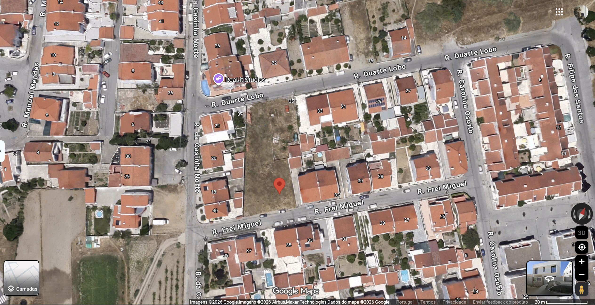
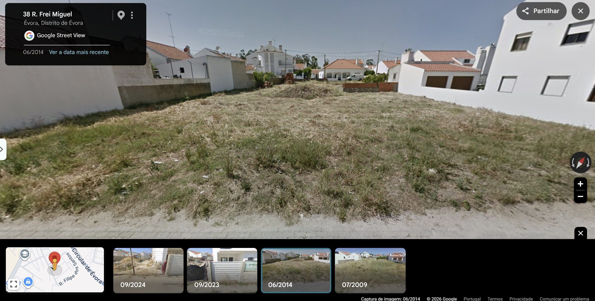
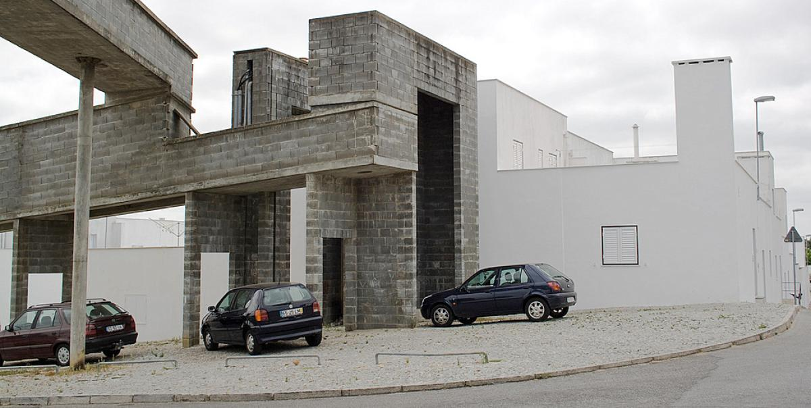
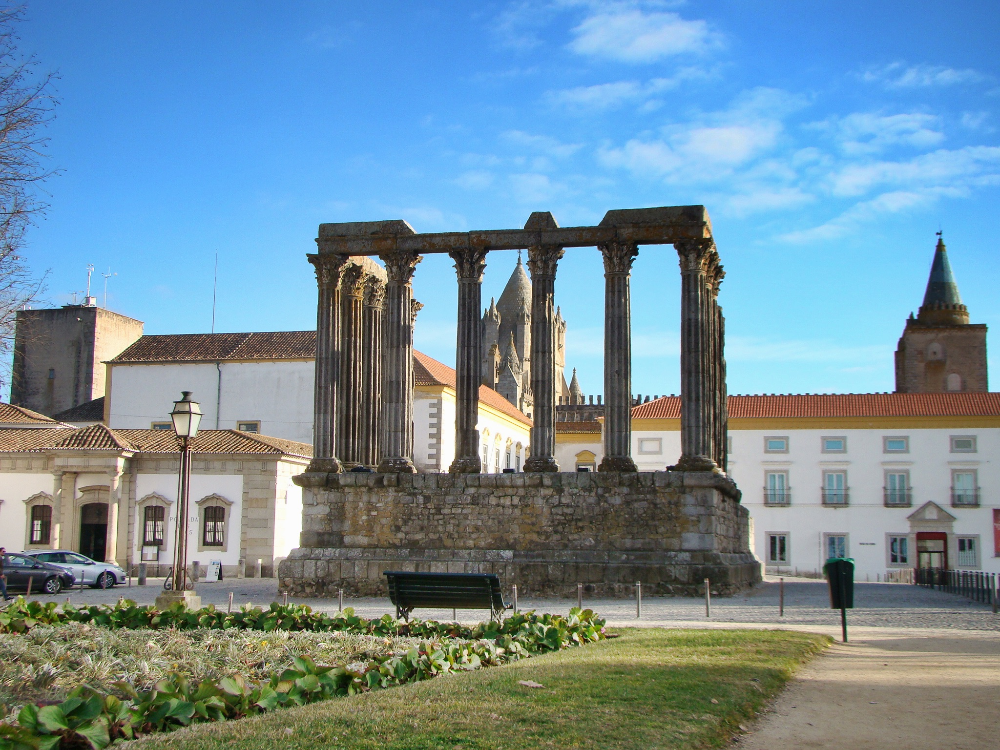

Rua Frei Miguel 38, Évora · Historic Centre · NUTS III Alentejo Central (PT186)
NUTS I: Continente → NUTS II: Alentejo → NUTS III: Alentejo Central · PT186.
Site: 38.5557417, −7.9234028 · ≈251–252 m · União das Freguesias de Évora — São Mamede, Sé, São Pedro e Santo Antão.
Urban context: historic-centre hilltop / plateau; the deck identifies Évora as UNESCO Historic Centre (1986).
Source basis: existing P2 deck; coordinates and altitude are flagged there as survey/confirmation items.| Territory | Population | Reference | Change |
|---|---|---|---|
| Évora | 53,577 | INE Censos 2021 | −5.3% |
| Alentejo Central | 152,444 | INE Censos 2021 | −8.6% |
| Freguesia intramuros | 4,738 | 2011 | — |
| Freguesia intramuros | 1.13 km² | 2011 | — |


Typical sequences from EPW; extremes and tolerance checked against IPMA normals
| Signal | Evidence in source deck | Design consequence |
|---|---|---|
| Summer heat | 2nd–3rd week July mean maxima 38.0–38.9 °C; peaks 40.3–42.1 °C | shade + thermal mass |
| Solar | summer noon ≈74.9°; winter ≈27.6° | deep horizontal shade; admit winter sun |
| Wind | summer NW wind / “nortada” ≈3.0–3.6 m/s | cross-ventilation toward N/NW |
| Night cooling | mild summer nights; useful free-cooling about May–Oct | night purge + mass |
| Rain | annual order 530–600 mm; summer drought | cistern + controlled drainage |
| Cold | 34–38 nights below 5 °C; IPMA records down to −4.2 °C | retain winter solar gain; protect roof/water lines |
Form: a compact two-storey mass with a protected interior patio; keep south/east openings shallow and direct living terraces / cross-ventilation toward the NW summer wind.
Why: combine the historic-centre compactness with the documented summer wind and the need to control solar exposure.
Form: high-inertia envelope, deep eaves/courtyard shade, no unshaded west glazing, winter-protected roof and water lines.
Why: respond to 40–45 °C tolerance conditions while retaining low winter sun and enabling night-flush cooling.
Culture is treated as a set of transferable architectural operations, not a style catalogue.
Earth, stone, lime, timber and clay tile are the material family identified in the source deck. The proposal should retain the short-distance / repair logic where feasible.
Thick wall, whitewash, small/high openings, patio and adjustable shading: use mass, lime and air before adding mechanical dependence.
Prefer dry or lime-based assemblies and layers that can be repaired without locking the historic fabric into irreversible concrete construction.

1977–2005 · 1,200 homes · 27 ha. White party-wall masses, courtyard row houses and the aqueduct/service channel as an infrastructural backbone.
Transferable operation: one strong spatial/infrastructural element can organise programme, services and identity without copying the historic form literally.
Credit in source deck: ArchDaily / Plataforma Urbanística de Évora. Map: OpenStreetMap.
2010. A continuous limestone platform recovers a datum around archaeological remains, with minimal additions and a precise material dialogue.
Transferable operation: make one exact move that clarifies heritage rather than competing with it.
Credit in source deck: Carrilho da Graça Architects. Map: OpenStreetMap.The source deck identifies a contemporary return to earth construction through compressed stabilised earth blocks, rammed earth with minimal cement, prefab panels and hybrid earth–timber systems.
Trend reading: earth is presented as a performance and low-carbon material system, not simply as a heritage image.
Trend credits in source deck: ArchDaily / plâno; Jornal de Notícias (2021); New Civil Engineer (2021).A decision board: every move is traceable to the territory, climate and culture boards.
Derived from: climate Rule 01 + Rule 02; Alentejo intra-muros party-wall morphology.
Derived from: same rules, with greater separation between public/work and domestic/rear zones.
| Layer | Role | Place logic |
|---|---|---|
| Street / ground | studio, workshop or small productive use | active frontage, service access |
| Domestic | living, kitchen, bedrooms | protected courtyard / upper level |
| Climate core | patio, shade, planting, cistern | cross-ventilation + thermal moderation |
| Roof | water collection + protected services | light, reversible intervention |
“A compact Évora house that keeps the street memory, turns the courtyard into climate infrastructure, and adds only reversible layers of earth, lime and timber.”
The declaration condenses the documented site, climate and vernacular rules into one project position; it is a design statement, not a source quotation.
The four boards read as one chain: place defines constraints → climate defines massing → culture defines the architectural language and construction logic → synthesis turns those rules into a testable project.
Source basis: uploaded P2/P3/P4 deck. Credits retained/condensed from the source: INE, IPMA, DGT, CM Évora, SIPA/DGPC, ArchDaily, Carrilho da Graça Architects, OpenStreetMap, and trend sources named in P4.